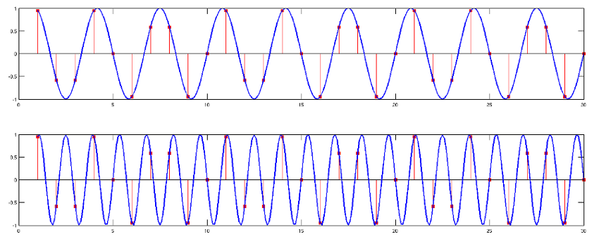
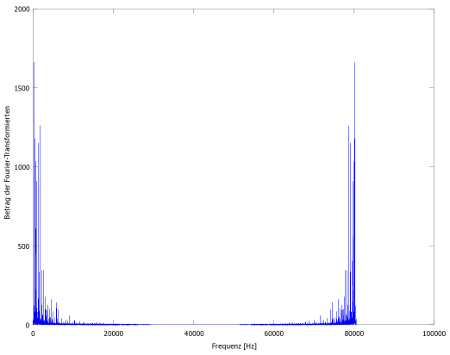

2 Grundlagen
-
Was ist die FT/ IFT?
Die Fourier-Transformation (FT) ist eine Integraltransformation, die einer
geeigneten Originalfunktion f(t) ihre Bildfunktion oder Fourier-Transformierte F(ν)
zuordnet.
Die Originalfunktion f(t) ist eine stückweise stetige, absolut integrierbare Zeitfunktion.
Die Bildfunktion F(ν) ist eine Funktion in Abhängigkeit von der Frequenz ν.
Die Inverse Fourier-Transformation (IFT) ist die Umkehrfunktion zur FT.
Sie ordnet einer Fourier-Transformierten F(ν) ihre Originalfunktion f(t) zu.
Mit Hilfe der IFT kann aus einem Frequenzspektrum die dazugehörige Funktion
in Abhängigkeit von der Zeit generiert werden.
-
Was leistet die FT?
Die FT untersucht, ob eine Funktion etwas Periodisches in sich hat. Dazu wird die zu
untersuchende Funktion f(t) mit dem komplexen Drehzeiger
 verglichen.
Dieser ist definiert als:
verglichen.
Dieser ist definiert als:

Das Produkt 2πν stellt die Kreisfrequenz ω dar. j ist die imaginäre Einheit.
Die Kontinuierliche Fourier-Transformation (KFT) ist demnach für alle ν Element der reellen Zahlen
definiert als:

Mit dem komplexen Drehzeiger kann eine Funktion sowohl auf die
Ähnlichkeit mit einem Sinus (Imaginärteil) als auch auf die Ähnlichkeit mit einem Kosinus
(Realteil) untersucht werden.
-
Wie wird die FT in der Signalverarbeitung eingesetzt?
DFT/ IDFT und FFT/ IFFT
Zur Analyse von diskreten Signalen, wie es in der Signalverarbeitung der Fall ist,
wird die Diskrete Fourier-Transformation (DFT) eingesetzt.
Sie ordnet einer endlichen Zahlenfolge fn mit n = 0, 1, 2, ..., m die Bildfolge
Fk mit k = 0, 1, 2, ..., m zu:
Bei der DFT ist
der auf eine Folge abgestimmte komplexe Drehzeiger.
Die Inverse Diskrete Fourier-Transformation (IDFT) ist die Umkehrfunktion zur DFT.
Man erhält die Originalfolge fn aus der Bildfolge Fk:
In der Praxis werden die Audiosignale mit einem Abtastkamm (Delta-Impulsfolge) in
äquidistanten Zeitabständen tn = nΔt mit n = 0, 1, 2, ..., m und der
Abtastzeit Δt > 0 abgetastet, sodass ein diskretes Signal entsteht.
Die Funktion liegt dann in Form von Messpunkten vor und wird als Folge fn,
deren Folgenglieder die aufeinanderfolgenden Messpunkte bilden, dargestellt.
Zu beachten ist hierbei, dass die Abtastzeiten Δt genügend klein gewählt werden,
damit die abgetastete Folge fn das Signal ausreichend widerspiegelt und dieses aus
den Messpunkten zurück gewonnen werden kann.
In der modernen Rechentechnik wird ein schneller, sehr effektiver Algorithmus, die Schnelle
Fourier-Transformation (Fast Fourier Transformation, FFT), zur Berechnung von diskreten
Fourier-Transformierten mit großem m eingesetzt. Die Anzahl der zu realisierenden Rechenoperationen
ist bei der FFT proportional zu N·log2(N) und ist damit wesentlich geringer,
als es bei der DFT mit ∝N² Operationen der Fall wäre.
Die Umkehrfunktion zur FFT ist die Inverse Schnelle Fast Fourier-Transformation (IFFT).
Prinzip des FFT-Algorithmus
Der Algorithmus der FFT spaltet die DFT so lange in je eine Fourier-Transformierte mit geraden
"c2k" und ungeraden "c2k+1" Fourier-Koeffizienten auf:
DFT


FFT
mit ,
bis nur noch ein gerader und ein ungerader Fourier-Koeffizient "c" übrig sind.
-
Besonderheiten bei der Anwendung der FFT in der Signalverarbeitung
In der Signalverarbeitung werden die Audiosignale mit Hilfe eines Abtastkammes (Delta-Impulsfolge)
abgetastet, sodass ein diskretes Signal entsteht. Dabei werden in der Regel pro Sekunde 44100 Messwerte
abgetastet. Bei der Abtastung kommt es stets zu einer Spiegelung zu 0.5 · Abtastrate,
also zu 0.5 · 44100 Hz = 22050 Hz,
was in etwa dem maximal hörbaren Frequenzbereich des menschlichen Ohres entspricht.
Der Grund für die Spiegelung wird in folgender Abbildung verdeutlicht:

In obiger Graphik sind zwei unterschiedliche Schwingungen, eine mit 0.3 · Abtastrate
und eine mit 0.7 · Abtastrate, abgebildet. Die roten Linien stellen die Messwerte dar,
die bei der Abtastung gespeichert werden. Man erkennt, dass sich für beide Schwingungen dieselben
Abtastwerte ergeben. Folglich sind die abgetasteten Signale sowie die Frequenzspektren dieser nach
der FFT stets symmetrisch zu 0.5 · Abtastrate, weshalb nur die erste Hälfte des
Frequenzspektrums der Fourier-Transformierten nach der FFT relevant ist.
Die folgenden Abbildungen zeigen ein Frequenzspektrum mit und eines ohne die Spiegelung:
|  |
 |
| Spektrum mit Spiegelung |
Spektrum ohne Spiegelung |
Desweiteren spielen nur die verschiedenen in einem Signal enthaltenen Frequenzen eine Rolle. Auf die
Phasenverschiebung, also ob es sich um einen Sinus oder um einen Kosinus handelt, wird dabei nicht geachtet,
da das menschliche Ohr diese nicht wahrnehmen kann.
Zur besseren Übersichtlichkeit bei der graphischen Darstellung des Frequenzspektrums wird der Betrag der
Fourier-Transformierten nach der FFT ("abs(FFT)") berechnet und abgebildet. Hierbei wird aus der
komplexen eine reellwertige Darstellung, bei der die x-Achse die Frequenz und die y-Achse den Betrag der
Fourier-Transformierten angibt. Die komplexe Darstellung ist zur Bearbeitung des Frequenzspektrums nicht geeignet,
da man die Frequenzen darin nicht so einfach identifizieren kann.
Nachstehende Abbildungen machen diesen Sachverhalt nochmals verständlich:
 |
|
| Komplexe Darstellung |
Reellwertige Darstellung |